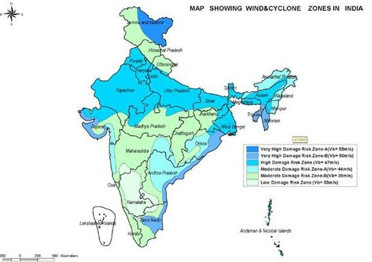

Disaster Management
Ensuring Safety and Preparedness
Ensuring Safety and Preparedness
Cyclones are caused by atmospheric disturbances around a low-pressure area distinguished by swift and often destructive air circulation. Cyclones are usually accompanied by violent storms and bad weather. The air circulates inward in an anticlockwise direction in the Northern hemisphere and clockwise in the Southern hemisphere. Cyclones are classified as: (i) extra tropical cyclones (also called temperate cyclones); and (ii) tropical cyclones. The word Cyclone is derived from the Greek word Cyclos meaning the coils of a snake. It was coined by Henry Peddington because the tropical storms in the Bay of Bengal and the Arabian Sea appear like coiled serpents of the sea.
Classifications
Cyclones are classified as extra tropical cyclones (also called temperate cyclones); and tropical cyclones.
The World Meteorological Organisation (WMO, 1976) uses the term 'Tropical Cyclone’ to cover weather systems in which winds exceed ‘Gale Force’ (minimum of 34 knots or 63 kph). Tropical cyclones are the progeny of ocean and atmosphere, powered by the heat from the sea; and driven by easterly trades and temperate westerlies, high planetary winds and their own fierce energy.
In India, cyclones are classified by:
Extra tropical cyclones occur in temperate zones and high latitude regions, though they are known to originate in the Polar Regions. Cyclones that developin the regions between the Tropics of Capricorn and Cancer are called tropical cyclones. Tropical cyclones are large-scale weather systems developing over tropical or subtropical waters, where they get organized into surface wind circulation.
Worldwide terminology
Cyclones are given many names in different regions of the world – They are known as typhoons in the China Sea and Pacific Ocean; hurricanes in the West Indian islands in the Caribbean Sea and Atlantic Ocean; tornados in the Guinea lands of West Africa and southern USA.; willy-willies in north-western Australia and tropical cyclones in the Indian Ocean
Indian Meteorological Department
The criteria below has been formulated by the Indian Meteorological Department (IMD), which classifies the low pressure systems in the Bay of Bengal and the Arabian Sea on the basis of capacity to damage, which is adopted by the WMO.
| Types of Disturbances | wind speed in Km/h | wind speedin knots |
|---|---|---|
| low pressure | less than 31 | less than 17 |
| depression | 31-49 | 17-27 |
| deep depression | 49-61 | 27-33 |
| cyclonic storms | 61-88 | 33-47 |
| severe cyclonic storm | 88-117 | 47-63 |
| super cyclone | more than 221 | more than 120 |
1 knot - 1.85 km per hour Cyclones are classified into five different levels on the basis of wind speed. They are further divided into the following categories according to their capacity to cause damage:-
| cyclone category | wind speed in Km/h | damage capacity |
|---|---|---|
| 01 | 120-150 | minimal |
| 02 | 150-180 | moderate |
| 03 | 180-210 | extensive |
| 04 | 210-250 | extream |
| 05 | 250 and above | catastrophic |
Storm surges (tidal waves) are defined as the rise in sea level above the normally predicted astronomical tide. Major factors include:
The very high specific humidity condenses into exceptionally large raindrops and giant cumulus clouds, resulting in high precipitation rates. When a cyclone makes landfall, rain rapidly saturates the catchment areas and the rapid runoff may extensively flood the usual water sources or create new ones
How Cyclones are formedThe development cycle of tropical cyclones may be divided into three stages:
Formation and Initial Development Stage The formation and initial development of a cyclonic storm depends upon various conditions. These are:
Mature Tropical Cyclones When a tropical storm intensifies, the air rises in vigorous thunderstorms and tends to spread out horizontally at the tropopause level. Once air spreads out, a positive perturbation pressure at high levels is produced, which accelerates the downward motion of air due to convection. With the inducement of subsidence, air warms up by compression and a warm ‘Eye’ is generated. Generally, the ‘Eye’ of the storms has three basic shapes: (i) circular; (ii) concentric; and (iii) elliptical. The main physical feature of a mature tropical cyclone in the Indian Ocean is a concentric pattern of highly turbulent giant cumulus thundercloud bands.
Modification and Decay A tropical cyclone begins to weaken in terms of its central low pressure, internal warmth and extremely high speeds, as soon as its source of warm moist air begins to ebb, or is abruptly cut off. This happens after its landfall or when it passes over cold waters. The weakening of a cyclone does not mean that the danger to life and property is over.
Indian Context The Indian subcontinent is one of the worst affected regions in the world. The subcontinent with a long coastline of 8041 kilometres is exposed to nearly 10 per cent of the world’s tropical cyclones. Of these, the majority of them have their initial genesis over the Bay of Bengal and strike the East coast of India. On an average, five to six tropical cyclones form every year, of which two or three could be severe. More cyclones occur in the Bay of Bengal than the Arabian Sea and the ratio is approximately 4:1. Cyclones occur frequently on both the coasts (the West coast - Arabian Sea; and the East coast - Bay of Bengal). An analysis of the frequency of cyclones on the East and West coasts of India between 1891 and 1990 shows that nearly 262 cyclones occurred (92 of these severe) in a 50 km wide strip above the East coast. Less severe cyclonic activity has been noticed on the West coast, where 33 cyclones occurred the same period, out of which 19 of were severe. Tropical cyclones occur in the months of May-June and October-November. Cyclones of severe intensity and frequency in the North Indian Ocean are bi-modal in character, with their primary peak in November and secondary peak in May. The disaster potential is particularly high during landfall in the North Indian Ocean (Bay of Bengal and the Arabian Sea) due to the accompanying destructive wind, storm surges and torrential rainfall. Of these, storm surges cause the most damage as sea water inundates low lying areas of coastal regions and causes heavy floods, erodes beaches and embankments, destroys vegetation and reduces soil fertility. Cyclones vary in diameter from 50 to 320 km but their effects dominate thousands of square kilometers of ocean surface and the lower atmosphere. The perimeter may measure 1,000 km but the powerhouse is located within the 100-km radius. Nearer the Eye, winds may hit at a speed of 320 km. Thus, tropical cyclones, characterized by destructive winds, torrential rainfall and storm surges disrupt normal life with the accompanying phenomena of floods due to the exceptional level of rainfall and storm surge inundation into inland areas. Cyclones are characterized by their devastating potential to damage structures, viz. houses; lifeline infrastructure-power and communication towers; hospitals; food storage facilities; roads, bridges and culverts; cropss etc. The most fatalities come from storm surges and the torrential rain flooding the lowland areas of coastal territories.
After ‘All Clear’ is issued for back movement by ‘State’ give attention to the following:
Emergency kit